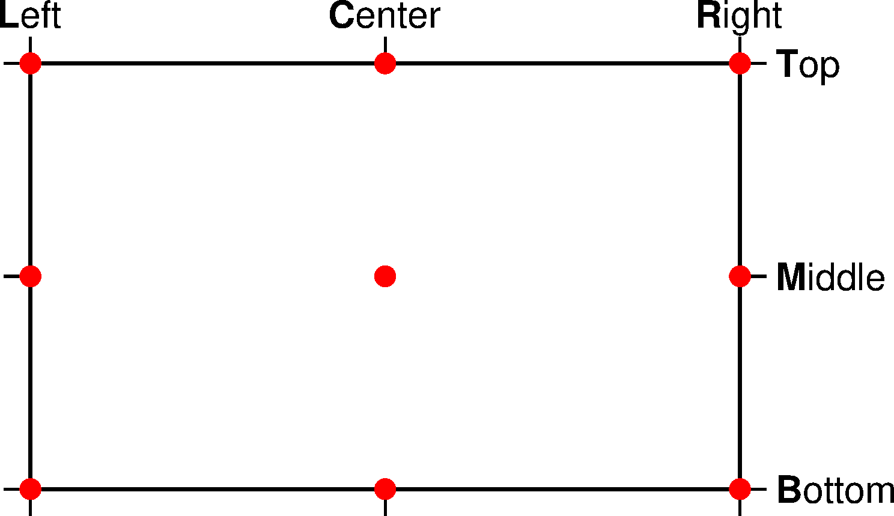
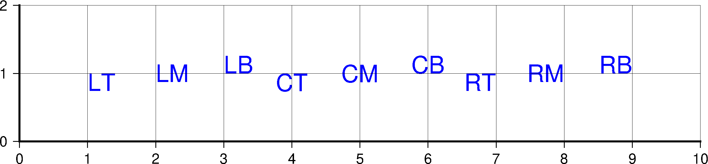

4.11 锚点¶
要将一个矩形物体放在指定的坐标处，该怎么放呢？是把矩形中心放在指定坐标处？还是把矩形左上角放在坐标处？最好能够控制将矩形的任意一点放在指定坐标处。
GMT提供了这样一种机制，可以很方便地将矩形的任意一点放在指定坐标处。这里所说的矩形，并不是一个真正的矩形，而是一串文本、比例尺、指南针、颜色条等等。这些东西都可以被抽象成一个矩形，这一节仅以字符串为例，介绍GMT中矩形的锚点。
任意一个字符串，都有一个将其包起来的矩形。如图所示：

如上图所示，在水平方向上，定义 L 、 C 、 R 三个水平位置代码，表示左、中、右三个水平位置；在垂直方向上，定义 T 、 M 、 B 三个垂直位置代码，代表上、中、下三个垂直位置。
注解
图中 B 代表的是字符 M 的底部，而不是字符 y 的底部，这在印刷行业里称为baseline。
将任意一个水平位置代码与任意一个垂直位置组合起来，就构成了矩形的9个锚点（图中的9个圆圈），分别是 LT 、 LM 、 LB 、 CT 、 CM 、 CB 、 RT 、 RM 、 RB 。先后顺序不重要，LT 和 TL 是一个意思。
要指定一串文本相对于特定坐标的对齐方式，可以通过指定将文本的某个锚点放在特定坐标处来实现。下图展示了9种文本对齐方式的效果。图中将九个字符串按照相应的对齐方式放在坐标
(1,1) 、 (2,1) 到 (9,1) 处，即将字符 LT 的 LT 锚点放在 (1,1) 处，其他同理。

从图中可以直观得看到，CM 对齐方式将字符串的中心放在了指定坐标处，LT
对齐方式将字符串的左上角放在了指定坐标处，其他同理。